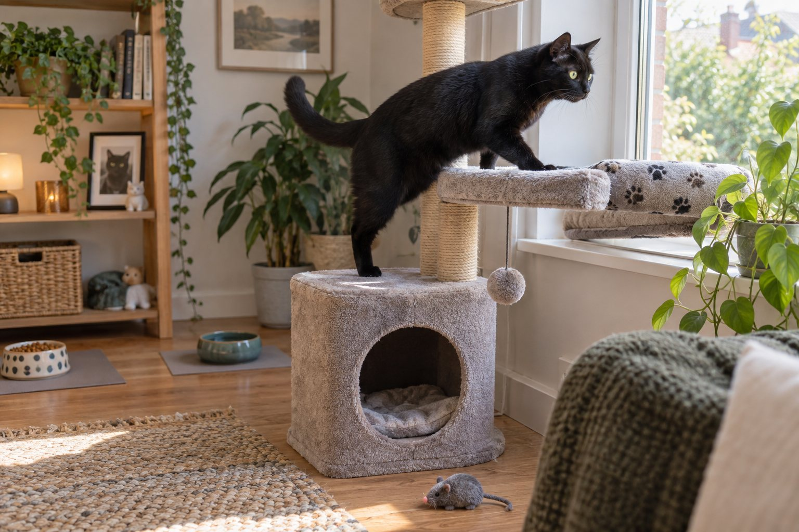
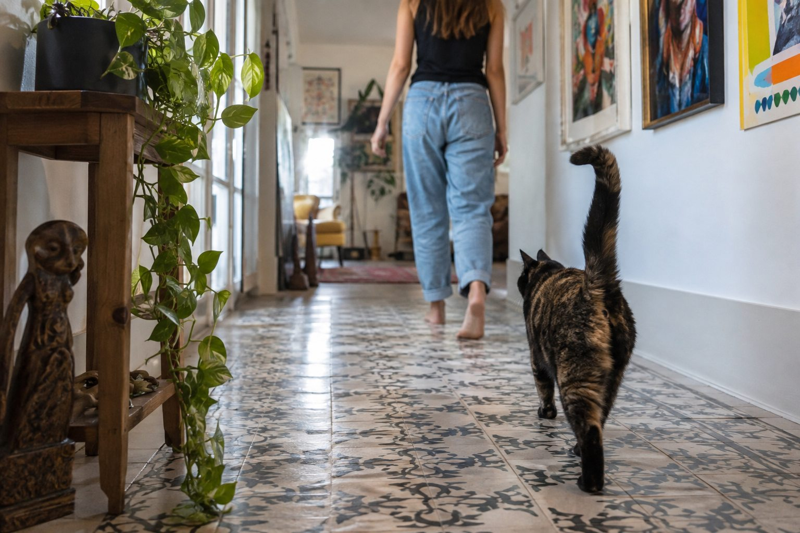
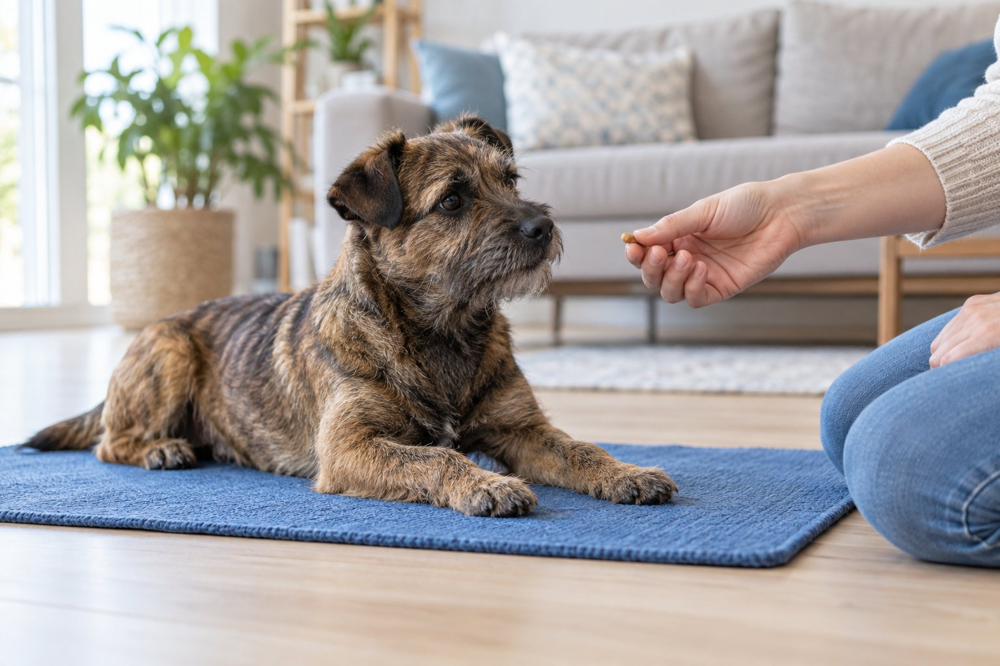
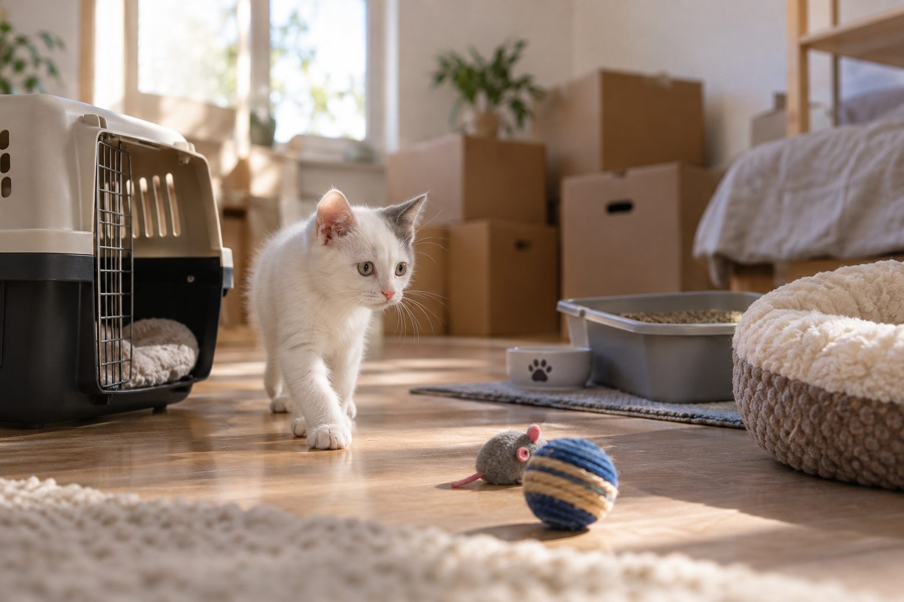
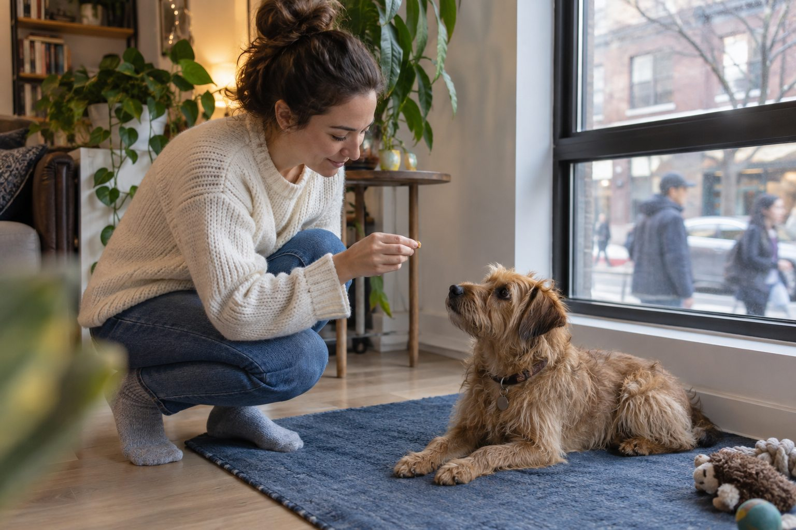
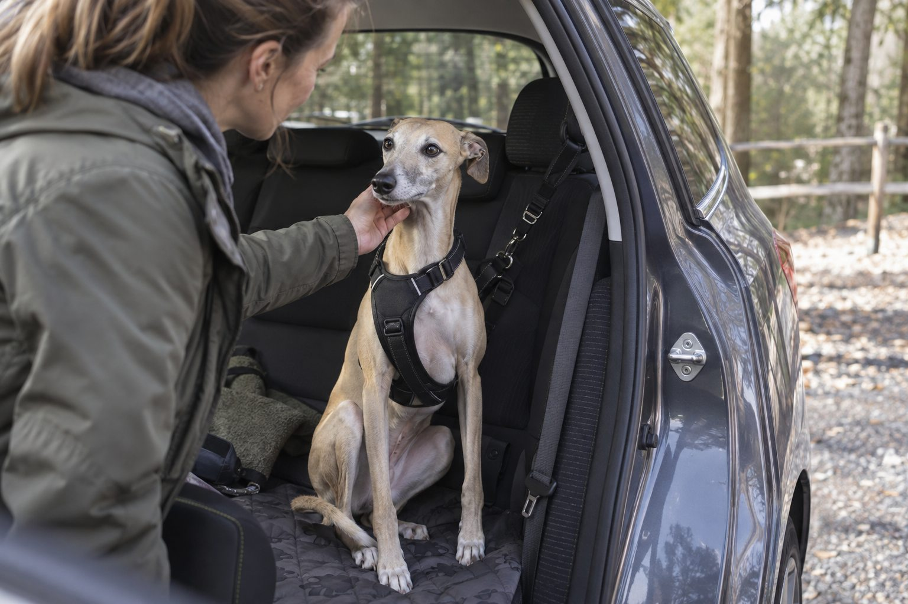

Training & Lifestyle
A Daily Routine That Enriches an Indoor Cat
A good indoor routine balances play, safe rest, and choice throughout the day.
Explore the guides
Kind training ideas and routines that make shared life easier.

A good indoor routine balances play, safe rest, and choice throughout the day.

Your cat may enjoy your company, expect a routine, or want something specific. Read the whole pattern.
Age, breed, health, and temperament shape a dog's activity needs more than any universal target.

A portable resting place can help a dog choose calm behavior in busy moments.

Give your cat a safe base, familiar routines, and time to explore a new space at their own pace.

Look for the reason behind the barking and teach a calmer response without shouting or punishment.

Make travel safer and easier through short practice trips, a secure setup, and patient rewards.